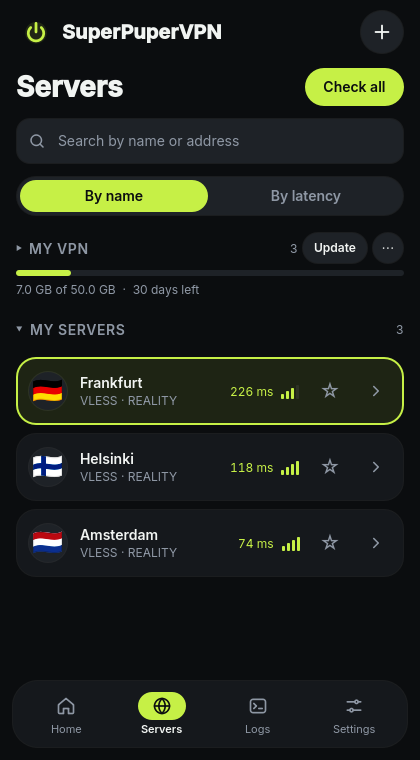
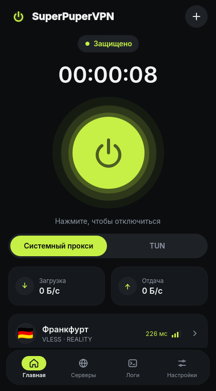

One button.
Your own VLESS + REALITY servers.
A clean desktop client for Windows and Linux that turns a vless:// link into a working
connection in seconds. Paste the link, press the button, done.


Made for people who just want it to work
Most VLESS clients expect you to know what spx, sid and fp mean.
SuperPuperVPN doesn't. It is built for your own servers on 3x-ui, Marzban, Remnawave or plain Xray, and for the
friends you share them with.
Paste and connect
Press Ctrl+V: one link, many links, base64 or a subscription URL with traffic and expiry.
Proxy or full tunnel
System proxy for browsers, or TUN for every app on the computer, games and terminal included.
No leaks
DNS goes through the tunnel too, IPv6 never leaks, and the system proxy comes back after a crash.
Real latency, real flags
Latency is measured through the server itself. Country flags come from an offline IP database.
Honest status
"Protected" shows up only after a real request went through your server, not when a process started.
No telemetry
Nothing is sent anywhere except through your own server. Ever. The code is open, so you can check.
Secure by design
The window you click has no privileges. A small system service does the privileged work and checks everything it is asked to do.
- No open ports in TUN mode. Nothing listens on localhost that other programs could use to leak your IP.
- Authenticated service. polkit on Linux, a locked-down named pipe on Windows; network clients are refused.
- Encrypted profiles. AES-256-GCM with the key in your OS keyring (libsecret or DPAPI).
- Strict validation. Links with options the core can't honour are refused with a clear message, not half-connected.
Install
Pick your system. The installer sets up the background service once; after that the app runs as you.
Windows 10 / 11
Download the .msi, run it and start SuperPuperVPN from the Start menu.
Builds are not code-signed yet: on a SmartScreen warning choose More info → Run anyway.
Download .msiFedora 42+
Download the .rpm and install it:
sudo dnf install ./superpupervpn-*.x86_64.rpmUbuntu, Debian, Mint
Ubuntu 22.04+, Debian 12+, Mint 21+. Download the .deb:
sudo apt install ./superpupervpn_*_amd64.debOther distributions: build from source.
A portable Windows .zip is on the releases page.
Three steps
No settings to learn first.
Copy your link
A
vless://link or a subscription URL from your panel.Press Ctrl+V
SuperPuperVPN shows what it found. Press Add.
Press the big button
Pick System proxy or TUN. You're protected.
Support the project
SuperPuperVPN is free and built by one person. No built-in servers, no ads, no telemetry: donations keep the development going. They fund the client only; VPN servers are not included.
USDT (TRC-20) · network fee is a few cents
TK8VdDvtU7Mq5b7X59SfpdURfpZR9etFmu
Or just star the repo and tell a friend: it helps a lot.